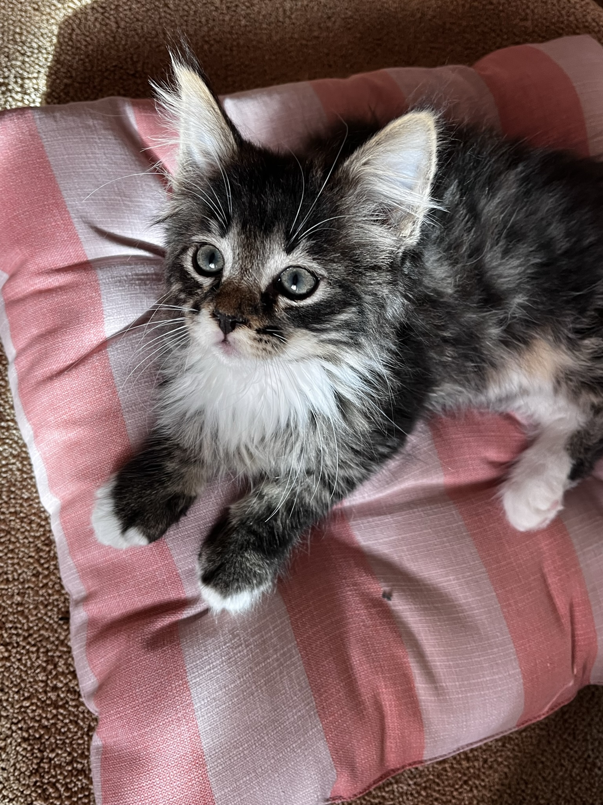
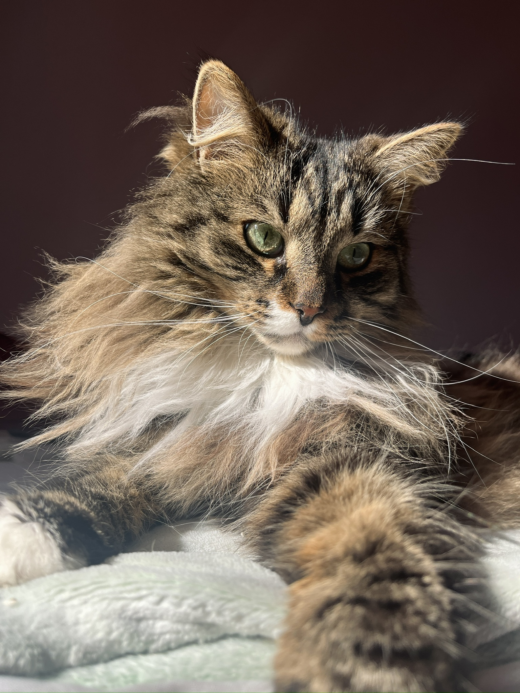
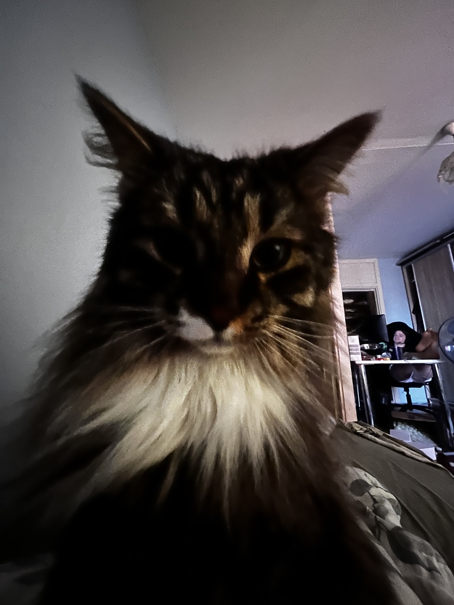
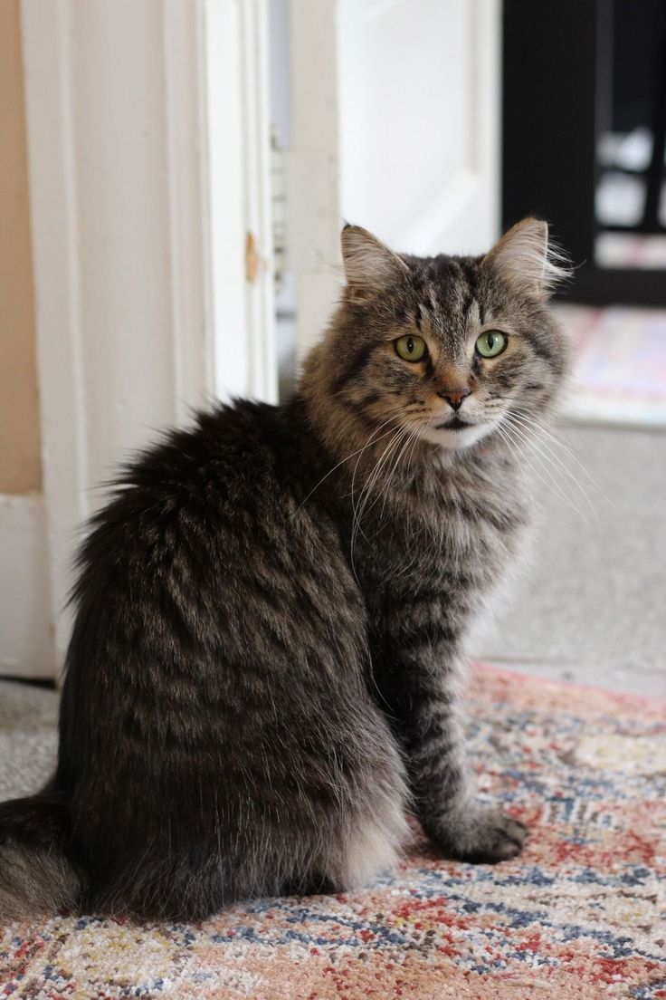

About Riko
Meet Riko, my adorable tabby cat with a big personality and an even bigger love for attention. He is a very special part of my life.
Riko loves sleeping in cozy places, jumping into cardboard boxes, and chewing on things. He is curious, playful, and always interested in what is happening around him.
One of his funniest habits is climbing onto my shoulder. He loves sitting up high, observing everything like a little king. Despite his adventurous side, he also enjoys snuggling and spending time with me.
Want to see more of Riko? Check out Riko's Photo Gallery!
Riko's Favorite Things
- Sleeping in cozy places
- Jumping into cardboard boxes
- Chewing on things
- Snuggling with his humans
- Sitting on my shoulder
A Day in Riko's Life
- Wake up and stretch
- Explore the house
- Find a cardboard box to play in
- Climb onto my shoulder
- Enjoy some snuggles
- Take another well-deserved nap
Riko's Photo Gallery



What Is a Tabby Cat?
Tabby cat is a cat that has a coat pattern. Interestingly, tabby is not a specific cat breed. It is a coat pattern found in many different cat breeds.

Tabby cats are known for their distinctive markings and beautiful coat patterns.
Fun Facts About Tabby Cats
Playful & Curious
Tabby cats are often curious and adventurous. Many enjoy exploring their surroundings and playing.
The Famous M
Many tabby cats have a distinctive M-shaped marking on their forehead.
Unique Coat Patterns
Tabby cats can have stripes, spots, swirls, and other beautiful patterns.
Friendly Companions
Many tabby cats are described as friendly and outgoing, although each cat has its own personality.
Want to learn more? Read about tabby cats on The Spruce Pets .